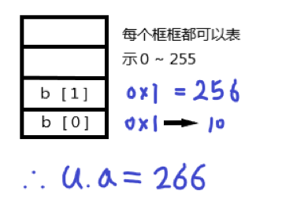

<!DOCTYPE html><html lang="zh-CN"><head><meta charset="UTF-8"><meta name="viewport" content="width=device-width,initial-scale=1,maximum-scale=2"><meta name="theme-color" content="#FFF"><link rel="apple-touch-icon" sizes="180x180" href="/images/apple-touch-icon.png"><link rel="icon" type="image/ico" sizes="32x32" href="/images/favicon.ico"><meta http-equiv="Cache-Control" content="no-transform"><meta http-equiv="Cache-Control" content="no-siteapp"><link rel="alternate" type="application/rss+xml" title="一个年轻人奔向梦想的足迹" href="https://kotori_suki.github.io/rss.xml"><link rel="alternate" type="application/atom+xml" title="一个年轻人奔向梦想的足迹" href="https://kotori_suki.github.io/atom.xml"><link rel="alternate" type="application/json" title="一个年轻人奔向梦想的足迹" href="https://kotori_suki.github.io/feed.json"><link rel="stylesheet" href="//fonts.googleapis.com/css?family=Mulish:300,300italic,400,400italic,700,700italic%7CFredericka%20the%20Great:300,300italic,400,400italic,700,700italic%7CNoto%20Serif%20JP:300,300italic,400,400italic,700,700italic%7CNoto%20Serif%20SC:300,300italic,400,400italic,700,700italic%7CInconsolata:300,300italic,400,400italic,700,700italic&display=swap&subset=latin,latin-ext"><link rel="stylesheet" href="/css/app.css?v=0.2.5"><link rel="canonical" href="https://kotori_suki.github.io/2021/08/20/CPPBase/%E5%85%B3%E9%94%AE%E8%AF%8D%E8%A7%A3%E6%9E%90/"><title>C++关键词解析 - C++基础 | Afei's Blog = 一个年轻人奔向梦想的足迹 = Welcome to my blog !</title><meta name="generator" content="Hexo 5.4.0"></head><body itemscope itemtype="http://schema.org/WebPage"><div id="loading"><div class="cat"><div class="body"></div><div class="head"><div class="face"></div></div><div class="foot"><div class="tummy-end"></div><div class="bottom"></div><div class="legs left"></div><div class="legs right"></div></div><div class="paw"><div class="hands left"></div><div class="hands right"></div></div></div></div><div id="container"><header id="header" itemscope itemtype="http://schema.org/WPHeader"><div class="inner"><div id="brand"><div class="pjax"><h1 itemprop="name headline">C++关键词解析</h1><div class="meta"><span class="item" title="创建时间：2021-08-20 18:35:18"><span class="icon"><i class="ic i-calendar"></i> </span><span class="text">发表于</span> <time itemprop="dateCreated datePublished" datetime="2021-08-20T18:35:18+08:00">2021-08-20</time></span></div></div></div><nav id="nav"><div class="inner"><div class="toggle"><div class="lines" aria-label="切换导航栏"><span class="line"></span> <span class="line"></span> <span class="line"></span></div></div><ul class="menu"><li class="item title"><a href="/" rel="start">Afei's Blog</a></li></ul><ul class="right"><li class="item theme"><i class="ic i-sun"></i></li><li class="item search"><i class="ic i-search"></i></li></ul></div></nav></div><div id="imgs" class="pjax"><ul><li class="item" data-background-image="https://tva3.sinaimg.cn/large/6833939bly1giclhfehz7j20zk0m8u0x.jpg"></li><li class="item" data-background-image="https://tva3.sinaimg.cn/large/6833939bly1gipeun65urj20zk0m81ii.jpg"></li><li class="item" data-background-image="https://tva3.sinaimg.cn/large/6833939bly1giclip4jbpj20zk0m87cv.jpg"></li><li class="item" data-background-image="https://tva3.sinaimg.cn/large/6833939bly1giciusoyjnj219g0u0x56.jpg"></li><li class="item" data-background-image="https://tva3.sinaimg.cn/large/6833939bly1gicliierfjj20zk0m8npd.jpg"></li><li class="item" data-background-image="https://tva3.sinaimg.cn/large/6833939bly1giph4fomxoj20zk0m8axp.jpg"></li></ul></div></header><div id="waves"><svg class="waves" xmlns="http://www.w3.org/2000/svg" xmlns:xlink="http://www.w3.org/1999/xlink" viewBox="0 24 150 28" preserveAspectRatio="none" shape-rendering="auto"><defs><path id="gentle-wave" d="M-160 44c30 0 58-18 88-18s 58 18 88 18 58-18 88-18 58 18 88 18 v44h-352z"/></defs><g class="parallax"><use xlink:href="#gentle-wave" x="48" y="0"/><use xlink:href="#gentle-wave" x="48" y="3"/><use xlink:href="#gentle-wave" x="48" y="5"/><use xlink:href="#gentle-wave" x="48" y="7"/></g></svg></div><main><div class="inner"><div id="main" class="pjax"><div class="article wrap"><div class="breadcrumb" itemscope itemtype="https://schema.org/BreadcrumbList"><i class="ic i-home"></i> <span><a href="/">首页</a></span><i class="ic i-angle-right"></i> <span class="current" itemprop="itemListElement" itemscope itemtype="https://schema.org/ListItem"><a href="/categories/CPPBase/" itemprop="item" rel="index" title="分类于 C++基础"><span itemprop="name">C++基础</span></a><meta itemprop="position" content="1"></span></div><article itemscope itemtype="http://schema.org/Article" class="post block" lang="zh-CN"><link itemprop="mainEntityOfPage" href="https://kotori_suki.github.io/2021/08/20/CPPBase/%E5%85%B3%E9%94%AE%E8%AF%8D%E8%A7%A3%E6%9E%90/"><span hidden itemprop="author" itemscope itemtype="http://schema.org/Person"><meta itemprop="image" content="/images/avatar.jpg"><meta itemprop="name" content="-YIFEI-"><meta itemprop="description" content="Welcome to my blog !, "></span><span hidden itemprop="publisher" itemscope itemtype="http://schema.org/Organization"><meta itemprop="name" content="一个年轻人奔向梦想的足迹"></span><div class="body md" itemprop="articleBody"><h1 id="c关键词解析constfriendtypedefunionstaticvirtualnewdeletedeletemallocfreecast"><a class="anchor" href="#c关键词解析constfriendtypedefunionstaticvirtualnewdeletedeletemallocfreecast">#</a> C++ 关键词解析：const，friend，typedef，union，static，virtual，new，delete，delete []，malloc，free，cast</h1><p><strong>概述：算是比较基础的关键词了，但面试又很喜欢问（</strong></p><h2 id="const"><a class="anchor" href="#const">#</a> const</h2><p>​ 这个关键词的用法比较多，但意思都一样，就是<strong>将一个值置为常量，防止意外的更改</strong>。(const 成员函数实际上是 const 修饰了 this 指针，让 this 这块内存的值不被改变，也就是对象的成员变量)</p><p></p><figure class="highlight c++"><figcaption><span>const</span></figcaption><table><tr><td class="gutter"><pre><span class="line">1</span><br><span class="line">2</span><br><span class="line">3</span><br><span class="line">4</span><br><span class="line">5</span><br><span class="line">6</span><br><span class="line">7</span><br><span class="line">8</span><br><span class="line">9</span><br><span class="line">10</span><br><span class="line">11</span><br><span class="line">12</span><br><span class="line">13</span><br><span class="line">14</span><br><span class="line">15</span><br><span class="line">16</span><br><span class="line">17</span><br><span class="line">18</span><br><span class="line">19</span><br><span class="line">20</span><br><span class="line">21</span><br></pre></td><td class="code"><pre><span class="line"><span class="class"><span class="keyword">class</span> <span class="title">A</span> &#123;</span></span><br><span class="line">	<span class="keyword">int</span>* <span class="keyword">const</span> p1 = <span class="keyword">new</span> <span class="built_in"><span class="keyword">int</span></span>(<span class="number">10</span>);	<span class="comment">//常量指针，即指针是一个常量，不能改变指向</span></span><br><span class="line">	<span class="keyword">const</span> <span class="keyword">int</span>* p2 = <span class="keyword">new</span> <span class="built_in"><span class="keyword">int</span></span>(<span class="number">20</span>);	<span class="comment">//指针常量，即指针指向一个常量，指针可以改变指向</span></span><br><span class="line"><span class="keyword">public</span>:</span><br><span class="line">	<span class="function"><span class="keyword">void</span> <span class="title">test_1</span><span class="params">()</span> </span>&#123;</span><br><span class="line">		<span class="comment">//p1 = p2;		//报错，常量指针不能改变指向</span></span><br><span class="line">		p2 = p1;		<span class="comment">//正确，但会导致内存泄漏</span></span><br><span class="line">		*p1 = *p2;		<span class="comment">//正确，常量指针指向的是一个int型变量</span></span><br><span class="line">		<span class="comment">//*p2 = *p1;	//报错，指针常量指向的是一个const int型常量</span></span><br><span class="line">	&#125;</span><br><span class="line">	<span class="function"><span class="keyword">void</span> <span class="title">test_1</span><span class="params">(<span class="keyword">int</span>&amp; a, <span class="keyword">const</span> <span class="keyword">int</span>&amp; b)</span> <span class="keyword">const</span> </span>&#123;	<span class="comment">//const成员函数</span></span><br><span class="line">		<span class="comment">//p2 = p1;		//报错，const成员函数不能改变类的成员变量</span></span><br><span class="line">		*p1 = *p2;		<span class="comment">//正确，改变的是另一块内存的值，不是类的成员变量</span></span><br><span class="line">		a = *p1;		<span class="comment">//正确，a不是类的成员变量</span></span><br><span class="line">		<span class="comment">//b = *p2;		//错误，b被定义为const引用，不能改变其值</span></span><br><span class="line">	&#125;</span><br><span class="line">	<span class="function"><span class="keyword">const</span> <span class="keyword">int</span> <span class="title">test_2</span><span class="params">()</span> </span>&#123;	<span class="comment">//返回值为const int型</span></span><br><span class="line">		<span class="keyword">return</span> *p1;		<span class="comment">//正确，int型自动转换为const int型返回</span></span><br><span class="line">		<span class="keyword">return</span> *p2;		<span class="comment">//正确，直接返回const int型</span></span><br><span class="line">	&#125;</span><br><span class="line">&#125;;</span><br></pre></td></tr></table></figure><p></p><h2 id="friend"><a class="anchor" href="#friend">#</a> friend</h2><p>​ 这个关键词主要是想<strong>让某些特定的类外函数访问类内的私有成员</strong>，具体用法如下：</p><p></p><figure class="highlight c++"><figcaption><span>friend</span></figcaption><table><tr><td class="gutter"><pre><span class="line">1</span><br><span class="line">2</span><br><span class="line">3</span><br><span class="line">4</span><br><span class="line">5</span><br><span class="line">6</span><br><span class="line">7</span><br><span class="line">8</span><br><span class="line">9</span><br><span class="line">10</span><br><span class="line">11</span><br><span class="line">12</span><br><span class="line">13</span><br><span class="line">14</span><br><span class="line">15</span><br><span class="line">16</span><br><span class="line">17</span><br><span class="line">18</span><br><span class="line">19</span><br><span class="line">20</span><br><span class="line">21</span><br><span class="line">22</span><br><span class="line">23</span><br><span class="line">24</span><br><span class="line">25</span><br><span class="line">26</span><br><span class="line">27</span><br><span class="line">28</span><br><span class="line">29</span><br><span class="line">30</span><br><span class="line">31</span><br><span class="line">32</span><br><span class="line">33</span><br><span class="line">34</span><br><span class="line">35</span><br><span class="line">36</span><br><span class="line">37</span><br><span class="line">38</span><br><span class="line">39</span><br><span class="line">40</span><br><span class="line">41</span><br><span class="line">42</span><br><span class="line">43</span><br><span class="line">44</span><br><span class="line">45</span><br><span class="line">46</span><br><span class="line">47</span><br><span class="line">48</span><br><span class="line">49</span><br><span class="line">50</span><br></pre></td><td class="code"><pre><span class="line"><span class="class"><span class="keyword">class</span> <span class="title">A</span>;</span></span><br><span class="line"><span class="class"><span class="keyword">class</span> <span class="title">B</span> &#123;</span></span><br><span class="line"><span class="keyword">private</span>:</span><br><span class="line">	A* a;</span><br><span class="line"><span class="keyword">public</span>:</span><br><span class="line">	<span class="function"><span class="keyword">int</span> <span class="title">f1</span><span class="params">(A* a_)</span></span>;</span><br><span class="line">&#125;;</span><br><span class="line"></span><br><span class="line"><span class="class"><span class="keyword">class</span> <span class="title">A</span> &#123;</span></span><br><span class="line"><span class="keyword">private</span>:</span><br><span class="line">	<span class="keyword">int</span> i = <span class="number">0</span>;</span><br><span class="line">	<span class="function"><span class="keyword">void</span> <span class="title">display</span><span class="params">()</span> </span>&#123;</span><br><span class="line">		cout &lt;&lt; i &lt;&lt; endl;</span><br><span class="line">	&#125;;</span><br><span class="line">	<span class="comment">//该方法在A的内部声明为友元，即该方法可以使用A的私有属性</span></span><br><span class="line">	<span class="function"><span class="keyword">friend</span> <span class="keyword">int</span> <span class="title">B::f1</span><span class="params">(A* a)</span></span>;</span><br><span class="line">	<span class="comment">//该类在A的内部声明为友元，即该类可以使用A的私有属性</span></span><br><span class="line">	<span class="keyword">friend</span> <span class="class"><span class="keyword">class</span> <span class="title">C</span>;</span></span><br><span class="line">&#125;;</span><br><span class="line"></span><br><span class="line"><span class="function"><span class="keyword">int</span> <span class="title">B::f1</span><span class="params">(A* a_)</span> </span>&#123;</span><br><span class="line">	a = a_;</span><br><span class="line">    <span class="comment">//如果没有friend关键词，这里应该报错，因为private成员属性是不可在类外访问的</span></span><br><span class="line">	a-&gt;i = <span class="number">10</span>;</span><br><span class="line">	a-&gt;<span class="built_in">display</span>();</span><br><span class="line">	<span class="keyword">return</span> a-&gt;i;</span><br><span class="line">&#125;</span><br><span class="line"></span><br><span class="line"><span class="class"><span class="keyword">class</span> <span class="title">C</span> &#123;</span></span><br><span class="line"><span class="keyword">private</span>:</span><br><span class="line">	A* a;</span><br><span class="line"><span class="keyword">public</span>:</span><br><span class="line">	<span class="function"><span class="keyword">void</span> <span class="title">f2</span><span class="params">(A* a_)</span> </span>&#123;</span><br><span class="line">		a = a_;</span><br><span class="line">        <span class="comment">//如果没有friend关键词，这里应该报错，因为private成员属性是不可在类外访问的</span></span><br><span class="line">		a-&gt;i = <span class="number">20</span>;</span><br><span class="line">		a-&gt;<span class="built_in">display</span>();</span><br><span class="line">	&#125;</span><br><span class="line">&#125;;</span><br><span class="line"></span><br><span class="line"><span class="function"><span class="keyword">int</span> <span class="title">main</span><span class="params">()</span> </span>&#123;</span><br><span class="line">	A* a = <span class="keyword">new</span> <span class="built_in">A</span>();</span><br><span class="line">	B* b = <span class="keyword">new</span> <span class="built_in">B</span>();</span><br><span class="line">	C* c = <span class="keyword">new</span> <span class="built_in">C</span>();</span><br><span class="line">	b-&gt;<span class="built_in">f1</span>(a);</span><br><span class="line">	c-&gt;<span class="built_in">f2</span>(a);</span><br><span class="line">&#125;</span><br><span class="line"><span class="comment">//运行结果:</span></span><br><span class="line"><span class="comment">//10</span></span><br><span class="line"><span class="comment">//20</span></span><br></pre></td></tr></table></figure><p></p><h2 id="typedef"><a class="anchor" href="#typedef">#</a> typedef</h2><p>​ 这个关键字是定义一种新类型用的，跟 #define 宏定义还是有区别的，这里做个辨析</p><p></p><figure class="highlight c++"><figcaption><span>typedef</span></figcaption><table><tr><td class="gutter"><pre><span class="line">1</span><br><span class="line">2</span><br><span class="line">3</span><br><span class="line">4</span><br><span class="line">5</span><br><span class="line">6</span><br><span class="line">7</span><br><span class="line">8</span><br><span class="line">9</span><br><span class="line">10</span><br><span class="line">11</span><br><span class="line">12</span><br><span class="line">13</span><br><span class="line">14</span><br><span class="line">15</span><br><span class="line">16</span><br><span class="line">17</span><br><span class="line">18</span><br><span class="line">19</span><br><span class="line">20</span><br><span class="line">21</span><br><span class="line">22</span><br></pre></td><td class="code"><pre><span class="line"><span class="keyword">typedef</span> <span class="keyword">int</span>* pint1;	<span class="comment">//定义新类型 pint1</span></span><br><span class="line"><span class="meta">#<span class="meta-keyword">define</span> pint2 int*	<span class="comment">//只在预编译阶段做简单替换</span></span></span><br><span class="line"></span><br><span class="line"><span class="function"><span class="keyword">int</span> <span class="title">main</span><span class="params">()</span> </span>&#123;</span><br><span class="line">    <span class="comment">//注意：这里的p1, p2都是一种新类型(int*),也就是int型指针</span></span><br><span class="line">	pint1 p1 = <span class="keyword">new</span> <span class="built_in"><span class="keyword">int</span></span>(<span class="number">1</span>), p2= <span class="keyword">new</span> <span class="built_in"><span class="keyword">int</span></span>(<span class="number">2</span>);</span><br><span class="line">    </span><br><span class="line">    <span class="comment">//注意：这里只会在预编译阶段变成这个样子:</span></span><br><span class="line">    <span class="comment">//int *p3 = new int(3), p4 = 4;</span></span><br><span class="line">    <span class="comment">//也就是p3是int型指针，p4是int型变量</span></span><br><span class="line">	pint2 p3 = <span class="keyword">new</span> <span class="built_in"><span class="keyword">int</span></span>(<span class="number">3</span>), p4 = <span class="number">4</span>;</span><br><span class="line">    </span><br><span class="line">	cout &lt;&lt; <span class="string">&quot;p1 = &quot;</span> &lt;&lt; *p1 &lt;&lt; endl;</span><br><span class="line">	cout &lt;&lt; <span class="string">&quot;p2 = &quot;</span> &lt;&lt; *p2 &lt;&lt; endl;</span><br><span class="line">	cout &lt;&lt; <span class="string">&quot;p3 = &quot;</span> &lt;&lt; *p3 &lt;&lt; endl;</span><br><span class="line">	cout &lt;&lt; <span class="string">&quot;p4 = &quot;</span> &lt;&lt; p4 &lt;&lt; endl;</span><br><span class="line">&#125;</span><br><span class="line"><span class="comment">//运行结果:</span></span><br><span class="line"><span class="comment">//p1 = 1</span></span><br><span class="line"><span class="comment">//p2 = 2</span></span><br><span class="line"><span class="comment">//p3 = 3</span></span><br><span class="line"><span class="comment">//p4 = 4</span></span><br></pre></td></tr></table></figure><p></p><h2 id="const关键字-和-define宏定义常量"><a class="anchor" href="#const关键字-和-define宏定义常量">#</a> const 关键字 和 #define 宏定义常量</h2><p>​ <strong>const 关键字</strong>是用来<strong>修饰有类型的常量</strong>的，const 修饰的变量<strong>会被编译器编译到符号表</strong>中，<strong>程序运行时将直接访问这个符号表</strong>，而不是内存中的 某个地址，从而实现真正意义上的常量；<strong>而 #define</strong> 则是定义一个立即数，<strong>只会在预编译阶段做简单的替换工作，不做类型检查</strong>，替换完后宏就消失了，编译器根本不知道宏的存在，更不会去编译这个宏，当然运行时也<strong>不会有内存地址</strong>。</p><p></p><figure class="highlight c++"><figcaption><span>const/define</span></figcaption><table><tr><td class="gutter"><pre><span class="line">1</span><br><span class="line">2</span><br><span class="line">3</span><br><span class="line">4</span><br><span class="line">5</span><br><span class="line">6</span><br><span class="line">7</span><br><span class="line">8</span><br><span class="line">9</span><br><span class="line">10</span><br></pre></td><td class="code"><pre><span class="line"><span class="meta">#<span class="meta-keyword">define</span> pi 3.14				<span class="comment">//立即数，pi不可取地址,只在预编译阶段做简单替换</span></span></span><br><span class="line"><span class="keyword">const</span> <span class="keyword">double</span> pii = <span class="number">3.14</span>;	<span class="comment">//一个存在静态数据区的常量</span></span><br><span class="line"></span><br><span class="line"><span class="function"><span class="keyword">int</span> <span class="title">main</span><span class="params">()</span> </span>&#123;</span><br><span class="line">	cout &lt;&lt; <span class="string">&quot;pi = &quot;</span> &lt;&lt; pi &lt;&lt; <span class="string">&quot;, have no address.&quot;</span> &lt;&lt; endl;</span><br><span class="line">	cout &lt;&lt; <span class="string">&quot;pii = &quot;</span> &lt;&lt; pii &lt;&lt; <span class="string">&quot;, address is &quot;</span> &lt;&lt; &amp;pii &lt;&lt; endl;</span><br><span class="line">&#125;</span><br><span class="line"><span class="comment">//运行结果:</span></span><br><span class="line"><span class="comment">//pi = 3.14, have no address.</span></span><br><span class="line"><span class="comment">//pii = 3.14, address is 003F9B30</span></span><br></pre></td></tr></table></figure><p></p><h2 id="union-和-struct-的区别"><a class="anchor" href="#union-和-struct-的区别">#</a> union 和 struct 的区别</h2><ul><li>union 是<strong>内部变量共用一块内存区域</strong>，内存大小由占用空间最大的数据类型决定</li><li>struct 是<strong>内部变量分开连续存在一块内存区域</strong>，内存大小是所有成员变量占用空间之和</li></ul><p></p><figure class="highlight c++"><figcaption><span>union/struct</span></figcaption><table><tr><td class="gutter"><pre><span class="line">1</span><br><span class="line">2</span><br><span class="line">3</span><br><span class="line">4</span><br><span class="line">5</span><br><span class="line">6</span><br><span class="line">7</span><br><span class="line">8</span><br><span class="line">9</span><br><span class="line">10</span><br><span class="line">11</span><br><span class="line">12</span><br><span class="line">13</span><br><span class="line">14</span><br><span class="line">15</span><br><span class="line">16</span><br><span class="line">17</span><br><span class="line">18</span><br><span class="line">19</span><br><span class="line">20</span><br><span class="line">21</span><br><span class="line">22</span><br><span class="line">23</span><br><span class="line">24</span><br><span class="line">25</span><br></pre></td><td class="code"><pre><span class="line"><span class="class"><span class="keyword">union</span> <span class="title">U</span> &#123;</span></span><br><span class="line">	<span class="keyword">char</span> b[<span class="number">2</span>];</span><br><span class="line">    <span class="keyword">int</span> a = <span class="number">0</span>;</span><br><span class="line">&#125;;</span><br><span class="line"></span><br><span class="line"><span class="class"><span class="keyword">struct</span> <span class="title">S</span> &#123;</span></span><br><span class="line">	<span class="keyword">int</span> a;</span><br><span class="line">	<span class="keyword">char</span> b[<span class="number">2</span>];</span><br><span class="line">&#125;;</span><br><span class="line"></span><br><span class="line"><span class="function"><span class="keyword">int</span> <span class="title">main</span><span class="params">()</span> </span>&#123;</span><br><span class="line">	U u;</span><br><span class="line">	u.b[<span class="number">0</span>] = <span class="number">1</span>;</span><br><span class="line">	u.a = <span class="number">10</span>;</span><br><span class="line">	u.b[<span class="number">1</span>] = <span class="number">1</span>;</span><br><span class="line">	cout &lt;&lt; u.a &lt;&lt; endl;</span><br><span class="line">	S s;</span><br><span class="line">	s.a = <span class="number">10</span>;</span><br><span class="line">	s.b[<span class="number">0</span>] = <span class="number">0</span>;</span><br><span class="line">	s.b[<span class="number">1</span>] = <span class="number">1</span>;</span><br><span class="line">	cout &lt;&lt; s.a &lt;&lt; endl;</span><br><span class="line">&#125;</span><br><span class="line"><span class="comment">//输出结果:</span></span><br><span class="line"><span class="comment">//266</span></span><br><span class="line"><span class="comment">//10</span></span><br></pre></td></tr></table></figure><p></p><p>解析：直接上图，应该不难理解 😃</p><p></p><h2 id="static全局唯一的静态变量"><a class="anchor" href="#static全局唯一的静态变量">#</a> static（全局唯一的静态变量）</h2><p></p><figure class="highlight c++"><figcaption><span>static</span></figcaption><table><tr><td class="gutter"><pre><span class="line">1</span><br><span class="line">2</span><br><span class="line">3</span><br><span class="line">4</span><br><span class="line">5</span><br><span class="line">6</span><br><span class="line">7</span><br><span class="line">8</span><br><span class="line">9</span><br><span class="line">10</span><br><span class="line">11</span><br><span class="line">12</span><br><span class="line">13</span><br><span class="line">14</span><br><span class="line">15</span><br><span class="line">16</span><br><span class="line">17</span><br><span class="line">18</span><br><span class="line">19</span><br><span class="line">20</span><br><span class="line">21</span><br><span class="line">22</span><br><span class="line">23</span><br><span class="line">24</span><br><span class="line">25</span><br><span class="line">26</span><br><span class="line">27</span><br><span class="line">28</span><br><span class="line">29</span><br><span class="line">30</span><br><span class="line">31</span><br><span class="line">32</span><br><span class="line">33</span><br><span class="line">34</span><br><span class="line">35</span><br></pre></td><td class="code"><pre><span class="line"><span class="keyword">static</span> <span class="keyword">int</span> glo = <span class="number">10</span>;	<span class="comment">//全局的静态变量</span></span><br><span class="line"></span><br><span class="line"><span class="function"><span class="keyword">void</span> <span class="title">f</span><span class="params">()</span> </span>&#123;</span><br><span class="line">	<span class="keyword">static</span> <span class="keyword">int</span> fun = <span class="number">20</span>;	<span class="comment">//函数体内静态变量，只会被定义一次</span></span><br><span class="line">	cout &lt;&lt; <span class="string">&quot;f::fun = &quot;</span> &lt;&lt; fun &lt;&lt; endl;</span><br><span class="line">	fun++;</span><br><span class="line">&#125;</span><br><span class="line"></span><br><span class="line"><span class="class"><span class="keyword">class</span> <span class="title">A</span> &#123;</span></span><br><span class="line"><span class="keyword">public</span>:</span><br><span class="line">	<span class="keyword">static</span> <span class="keyword">int</span> cla;	<span class="comment">//A的所有实例对象共用这个cla静态变量</span></span><br><span class="line">&#125;;</span><br><span class="line"><span class="keyword">int</span> A::cla = <span class="number">30</span>;</span><br><span class="line"></span><br><span class="line"><span class="function"><span class="keyword">int</span> <span class="title">main</span><span class="params">()</span> </span>&#123;</span><br><span class="line">	cout &lt;&lt; <span class="string">&quot;glo = &quot;</span> &lt;&lt; glo &lt;&lt; endl;</span><br><span class="line">	<span class="built_in">f</span>();	<span class="comment">//打印并修改静态变量fun</span></span><br><span class="line">	cout &lt;&lt; <span class="string">&quot;A::cla = &quot;</span> &lt;&lt; A::cla &lt;&lt; endl;</span><br><span class="line"></span><br><span class="line">	cout &lt;&lt; <span class="string">&quot;Editing...&quot;</span> &lt;&lt; endl;</span><br><span class="line">	glo++;</span><br><span class="line">	A::cla++;</span><br><span class="line"></span><br><span class="line">	cout &lt;&lt; <span class="string">&quot;glo = &quot;</span> &lt;&lt; glo &lt;&lt; endl;</span><br><span class="line">	<span class="built_in">f</span>();	<span class="comment">//打印并修改静态变量fun</span></span><br><span class="line">	cout &lt;&lt; <span class="string">&quot;A::cla = &quot;</span> &lt;&lt; A::cla &lt;&lt; endl;</span><br><span class="line">&#125;</span><br><span class="line"><span class="comment">//运行结果:</span></span><br><span class="line"><span class="comment">//glo = 10</span></span><br><span class="line"><span class="comment">//f::fun = 20</span></span><br><span class="line"><span class="comment">//A::cla = 30</span></span><br><span class="line"><span class="comment">//Editing...</span></span><br><span class="line"><span class="comment">//glo = 11</span></span><br><span class="line"><span class="comment">//f::fun = 21</span></span><br><span class="line"><span class="comment">//A::cla = 31</span></span><br></pre></td></tr></table></figure><p></p><h2 id="virtual虚函数多态的精华2333"><a class="anchor" href="#virtual虚函数多态的精华2333">#</a> virtual（虚函数，多态的精华 2333）</h2><p>​ virtual 关键字是用来修饰 类 / 结构体 成员函数的，代表这个函数可以被子类重写。</p><p></p><figure class="highlight c++"><figcaption><span>virtual</span></figcaption><table><tr><td class="gutter"><pre><span class="line">1</span><br><span class="line">2</span><br><span class="line">3</span><br><span class="line">4</span><br><span class="line">5</span><br><span class="line">6</span><br><span class="line">7</span><br><span class="line">8</span><br><span class="line">9</span><br><span class="line">10</span><br><span class="line">11</span><br><span class="line">12</span><br><span class="line">13</span><br><span class="line">14</span><br><span class="line">15</span><br><span class="line">16</span><br><span class="line">17</span><br><span class="line">18</span><br><span class="line">19</span><br><span class="line">20</span><br><span class="line">21</span><br><span class="line">22</span><br><span class="line">23</span><br><span class="line">24</span><br><span class="line">25</span><br><span class="line">26</span><br><span class="line">27</span><br><span class="line">28</span><br><span class="line">29</span><br><span class="line">30</span><br><span class="line">31</span><br><span class="line">32</span><br><span class="line">33</span><br><span class="line">34</span><br><span class="line">35</span><br><span class="line">36</span><br><span class="line">37</span><br><span class="line">38</span><br><span class="line">39</span><br><span class="line">40</span><br><span class="line">41</span><br><span class="line">42</span><br><span class="line">43</span><br></pre></td><td class="code"><pre><span class="line"><span class="class"><span class="keyword">struct</span> <span class="title">Interface</span>&#123;</span></span><br><span class="line">	<span class="function"><span class="keyword">virtual</span> <span class="keyword">void</span> <span class="title">display</span><span class="params">()</span> </span>= <span class="number">0</span>;	<span class="comment">//接口中只能有纯虚函数</span></span><br><span class="line">&#125;;</span><br><span class="line"></span><br><span class="line"><span class="class"><span class="keyword">class</span> <span class="title">Abstract</span> &#123;</span></span><br><span class="line"><span class="keyword">private</span>:</span><br><span class="line">	<span class="keyword">int</span> a;				<span class="comment">//抽象类可以有成员变量</span></span><br><span class="line"><span class="keyword">public</span>:</span><br><span class="line">	<span class="function"><span class="keyword">virtual</span> <span class="keyword">void</span> <span class="title">show</span><span class="params">()</span> </span>= <span class="number">0</span>;	<span class="comment">//纯虚函数必须重写</span></span><br><span class="line">	<span class="function"><span class="keyword">virtual</span> <span class="keyword">void</span> <span class="title">func</span><span class="params">()</span> </span>&#123;		<span class="comment">//虚函数可以不重写</span></span><br><span class="line">		cout &lt;&lt; <span class="string">&quot;This is an Abstract function&quot;</span> &lt;&lt; endl;</span><br><span class="line">	&#125;</span><br><span class="line">	<span class="keyword">virtual</span> ~<span class="built_in">Abstract</span>() &#123;&#125;		<span class="comment">//防止内存泄露</span></span><br><span class="line">&#125;;</span><br><span class="line"></span><br><span class="line"><span class="class"><span class="keyword">class</span> <span class="title">Concrete</span> :</span> <span class="keyword">public</span> Interface , <span class="keyword">public</span> Abstract&#123;</span><br><span class="line"><span class="keyword">public</span>:</span><br><span class="line">	<span class="function"><span class="keyword">void</span> <span class="title">display</span><span class="params">()</span> </span>&#123;		<span class="comment">//重写纯虚函数，否则这个类也将成为抽象类</span></span><br><span class="line">		cout &lt;&lt; <span class="string">&quot;Displaying a concrete object&quot;</span> &lt;&lt; endl;</span><br><span class="line">	&#125;</span><br><span class="line">	<span class="function"><span class="keyword">void</span> <span class="title">show</span><span class="params">()</span> </span>&#123;			<span class="comment">//重写纯虚函数，否则这个类也将成为抽象类</span></span><br><span class="line">		cout &lt;&lt; <span class="string">&quot;Showing a concrete object&quot;</span> &lt;&lt; endl;</span><br><span class="line">	&#125;</span><br><span class="line">&#125;;</span><br><span class="line"></span><br><span class="line"><span class="function"><span class="keyword">int</span> <span class="title">main</span><span class="params">()</span> </span>&#123;</span><br><span class="line">	Interface* interf = <span class="keyword">new</span> <span class="built_in">Concrete</span>();</span><br><span class="line">	interf-&gt;<span class="built_in">display</span>();</span><br><span class="line">	Abstract* abstra = <span class="keyword">new</span> <span class="built_in">Concrete</span>();</span><br><span class="line">	abstra-&gt;<span class="built_in">show</span>();</span><br><span class="line">	abstra-&gt;<span class="built_in">func</span>();</span><br><span class="line">    cout &lt;&lt; <span class="built_in"><span class="keyword">sizeof</span></span>(Interface) &lt;&lt; endl;</span><br><span class="line">	cout &lt;&lt; <span class="built_in"><span class="keyword">sizeof</span></span>(Abstract) &lt;&lt; endl;</span><br><span class="line">	cout &lt;&lt; <span class="built_in"><span class="keyword">sizeof</span></span>(Concrete) &lt;&lt; endl;</span><br><span class="line">&#125;</span><br><span class="line"></span><br><span class="line"><span class="comment">//运行结果: (32位系统)</span></span><br><span class="line"><span class="comment">//Displaying a concrete object</span></span><br><span class="line"><span class="comment">//Showing a concrete object</span></span><br><span class="line"><span class="comment">//This is an Abstract function</span></span><br><span class="line"><span class="comment">//sizeof(Interface) = 4</span></span><br><span class="line"><span class="comment">//sizeof(Abstract) = 8</span></span><br><span class="line"><span class="comment">//sizeof(Concrete) = 12</span></span><br></pre></td></tr></table></figure><p></p><ol><li>抽象接口和抽象类的区别</li></ol><ul><li>抽象接口只有纯虚函数，没有成员变量，没有成员函数，可以理解为类的行为规范</li><li>抽象类可以有纯虚函数，成员变量，成员函数，可以理解为类的抽象</li><li>抽象接口和抽象类都不可以通过 new 实例化出来。</li></ul><ol start="2"><li>纯虚函数和虚函数的区别</li></ol><ul><li>纯虚函数：子类必须实现，否则子类也将是抽象类，抽象类无法被实例化</li><li>虚函数：子类可以不实现 (重写)，不重写则沿用父类的虚方法，不重写也可以实例化</li></ul><ol start="3"><li>为什么要把抽象类的析构函数设为虚函数，而构造函数不需要</li></ol><ul><li>如果抽象类的析构函数不是虚函数，用抽象类来动态表示实现类时，调用析构函数将只调用抽象类的，不调用实现类的，会导致内存泄露，因为实现类并未析构。</li><li>构造函数无法设为虚函数，因为如果设成虚函数，new 的时候将无法知道调用的构造函数是哪个派生类的，又或者是自己的；另外没有 new 出来的对象是没有内存的，更没有虚函数表，没有虚函数表指针自然也不可能调用虚的构造函数。</li></ul><ol start="4"><li>静态类型，动态类型，静态绑定，动态绑定的概念</li></ol><ul><li>静态类型：抽象类或接口声明时的类型</li><li>动态类型：用实现类来给抽象类动态赋值后，抽象类的动态类型就是该实现类</li><li>静态绑定：非虚函数都是静态绑定的，静态绑定在编译过程中完成</li><li>动态绑定：虚函数可以动态绑定，绑定为动态类型的重写函数 (如果有重写)，运行时动态完成</li></ul><ol start="5"><li>虚函数的实现原理</li></ol><p>每个有虚函数的类中都会有一个或多个<strong>虚函数指针</strong>，指向一张或多张<strong>虚函数表</strong></p><p>以上面的程序为例：</p><ul><li>Interface 有 4 个字节，刚好是一个<strong>虚函数指针</strong>的大小</li><li>Abstract 有 8 个字节，刚好是一个<strong>虚函数指针</strong> + 一个<strong> int 型变量</strong>的大小</li><li>Concrete 有 12 个字节，正好是<strong>两个虚函数指针</strong> + Abstract 基类中<strong> int 型变量</strong>的大小</li></ul><p><strong>Concrete 中的两个虚函数指针会兼容两个基类的虚函数指针，即 抽象类的虚函数指针要能访问动态绑定的实现类的虚函数表，所以这里要拆开两个虚函数表</strong></p><ol start="6"><li><p>虚函数表编译后存在哪里？</p><p>面试被问到了，下次再写，mark 一下。</p></li></ol><h2 id="newdeletemallocfree"><a class="anchor" href="#newdeletemallocfree">#</a> new，delete，malloc，free</h2><ul><li>new，delete 是 C++ 中封装起来，用来在堆内存中申请空间，释放空间的<strong>关键字</strong>。</li><li>malloc ()，free () 是<strong> C 标准库中的函数</strong>，也是用来在堆内存中申请 释放空间的。</li><li>new，delete 关键字 底层也是有 malloc 和 free 实现的，但 new，delete 会调用类的<strong>构造函数和析构函数</strong></li><li>malloc ()，free () 则不会调用构造函数和析构函数，所以<strong>在创建类对象的使用上非常不安全</strong>。</li></ul><p>实例代码如下：</p><p></p><figure class="highlight c++"><figcaption><span>new/malloc</span></figcaption><table><tr><td class="gutter"><pre><span class="line">1</span><br><span class="line">2</span><br><span class="line">3</span><br><span class="line">4</span><br><span class="line">5</span><br><span class="line">6</span><br><span class="line">7</span><br><span class="line">8</span><br><span class="line">9</span><br><span class="line">10</span><br><span class="line">11</span><br><span class="line">12</span><br><span class="line">13</span><br><span class="line">14</span><br><span class="line">15</span><br><span class="line">16</span><br><span class="line">17</span><br><span class="line">18</span><br><span class="line">19</span><br><span class="line">20</span><br></pre></td><td class="code"><pre><span class="line"><span class="class"><span class="keyword">class</span> <span class="title">A</span> &#123;</span></span><br><span class="line"><span class="keyword">private</span>:</span><br><span class="line">	<span class="keyword">int</span> i = <span class="number">10</span>;</span><br><span class="line"><span class="keyword">public</span>:</span><br><span class="line">	<span class="function"><span class="keyword">void</span> <span class="title">display</span><span class="params">()</span> </span>&#123;</span><br><span class="line">		cout &lt;&lt; <span class="string">&quot;A-&gt;i = &quot;</span> &lt;&lt; i &lt;&lt; endl;</span><br><span class="line">	&#125;</span><br><span class="line">&#125;;</span><br><span class="line"></span><br><span class="line"><span class="function"><span class="keyword">int</span> <span class="title">main</span><span class="params">()</span> </span>&#123;</span><br><span class="line">	A* a1 = <span class="keyword">new</span> <span class="built_in">A</span>();</span><br><span class="line">	a1-&gt;<span class="built_in">display</span>();</span><br><span class="line">	<span class="keyword">delete</span> a1;</span><br><span class="line">	A* a2 = (A*)<span class="built_in">malloc</span>(<span class="built_in"><span class="keyword">sizeof</span></span>(A));</span><br><span class="line">	a2-&gt;<span class="built_in">display</span>();</span><br><span class="line">	<span class="built_in">free</span>(a2);</span><br><span class="line">&#125;;</span><br><span class="line"><span class="comment">//运行结果:</span></span><br><span class="line"><span class="comment">//A-&gt;i = 10</span></span><br><span class="line"><span class="comment">//A-&gt;i = -842150451</span></span><br></pre></td></tr></table></figure><p></p><h2 id="newdelete"><a class="anchor" href="#newdelete">#</a> new[]，delete[]</h2><p></p><figure class="highlight c++"><figcaption><span>new[]/delete[]</span></figcaption><table><tr><td class="gutter"><pre><span class="line">1</span><br><span class="line">2</span><br><span class="line">3</span><br><span class="line">4</span><br><span class="line">5</span><br><span class="line">6</span><br><span class="line">7</span><br><span class="line">8</span><br><span class="line">9</span><br><span class="line">10</span><br><span class="line">11</span><br><span class="line">12</span><br><span class="line">13</span><br><span class="line">14</span><br><span class="line">15</span><br><span class="line">16</span><br><span class="line">17</span><br><span class="line">18</span><br></pre></td><td class="code"><pre><span class="line"><span class="class"><span class="keyword">class</span> <span class="title">A</span> &#123;</span></span><br><span class="line"><span class="keyword">public</span>:</span><br><span class="line">	<span class="built_in">A</span>() &#123; cout &lt;&lt; <span class="string">&quot;Construct an A object&quot;</span> &lt;&lt; endl; &#125;</span><br><span class="line">	~<span class="built_in">A</span>() &#123; cout &lt;&lt; <span class="string">&quot;Destruct an A object&quot;</span> &lt;&lt; endl; &#125;</span><br><span class="line">&#125;;</span><br><span class="line"></span><br><span class="line"><span class="function"><span class="keyword">int</span> <span class="title">main</span><span class="params">()</span> </span>&#123;</span><br><span class="line">	A* arr = <span class="keyword">new</span> A[<span class="number">3</span>];</span><br><span class="line">    <span class="comment">//delete arr		//报错，arr的空间没有全部回收，会导致内存泄露</span></span><br><span class="line">	<span class="keyword">delete</span>[] arr;		<span class="comment">//正确</span></span><br><span class="line">&#125;</span><br><span class="line"><span class="comment">//运行结果:</span></span><br><span class="line"><span class="comment">//Construct an A object</span></span><br><span class="line"><span class="comment">//Construct an A object</span></span><br><span class="line"><span class="comment">//Construct an A object</span></span><br><span class="line"><span class="comment">//Destruct an A object</span></span><br><span class="line"><span class="comment">//Destruct an A object</span></span><br><span class="line"><span class="comment">//Destruct an A object</span></span><br></pre></td></tr></table></figure><p></p><h2 id="cast"><a class="anchor" href="#cast">#</a> cast</h2><p>​ Cast 是用于不同类对象间转换的关键字，转换时会做类型检测，有如下几种：</p><ul><li>static_cast&lt;T&gt;：<ul><li>用于基础类型间的转换</li><li>不能用于基础类型指针间的转换</li><li>用于有继承关系类指针之间的转换</li></ul></li><li>dynamic_cast&lt;T&gt;：<ul><li>用于有继承关系的类指针间的转换</li><li>用于有交叉关系的类指针间的转换</li><li>具有类型检测功能，程序运行时做动态检查</li><li>需要虚函数的支持</li></ul></li><li>const_cast&lt;T&gt;：<ul><li>用于去除变量的只读属性</li><li>强制转换的目标类型必须是指针或引用</li></ul></li><li>reinterpret_cast&lt;T&gt;：<ul><li>用于指针类型间的强制转换</li><li>用于整数和指针类型间的强制转换</li></ul></li></ul><p></p><figure class="highlight c++"><figcaption><span>cast</span></figcaption><table><tr><td class="gutter"><pre><span class="line">1</span><br><span class="line">2</span><br><span class="line">3</span><br><span class="line">4</span><br><span class="line">5</span><br><span class="line">6</span><br><span class="line">7</span><br><span class="line">8</span><br><span class="line">9</span><br><span class="line">10</span><br><span class="line">11</span><br><span class="line">12</span><br><span class="line">13</span><br><span class="line">14</span><br><span class="line">15</span><br><span class="line">16</span><br><span class="line">17</span><br><span class="line">18</span><br><span class="line">19</span><br><span class="line">20</span><br><span class="line">21</span><br><span class="line">22</span><br><span class="line">23</span><br><span class="line">24</span><br><span class="line">25</span><br><span class="line">26</span><br><span class="line">27</span><br><span class="line">28</span><br><span class="line">29</span><br><span class="line">30</span><br><span class="line">31</span><br><span class="line">32</span><br><span class="line">33</span><br><span class="line">34</span><br><span class="line">35</span><br><span class="line">36</span><br><span class="line">37</span><br><span class="line">38</span><br><span class="line">39</span><br><span class="line">40</span><br><span class="line">41</span><br><span class="line">42</span><br><span class="line">43</span><br><span class="line">44</span><br><span class="line">45</span><br><span class="line">46</span><br><span class="line">47</span><br><span class="line">48</span><br><span class="line">49</span><br><span class="line">50</span><br><span class="line">51</span><br><span class="line">52</span><br><span class="line">53</span><br><span class="line">54</span><br><span class="line">55</span><br><span class="line">56</span><br><span class="line">57</span><br><span class="line">58</span><br><span class="line">59</span><br><span class="line">60</span><br><span class="line">61</span><br><span class="line">62</span><br><span class="line">63</span><br><span class="line">64</span><br><span class="line">65</span><br><span class="line">66</span><br><span class="line">67</span><br><span class="line">68</span><br><span class="line">69</span><br><span class="line">70</span><br><span class="line">71</span><br><span class="line">72</span><br><span class="line">73</span><br><span class="line">74</span><br><span class="line">75</span><br><span class="line">76</span><br><span class="line">77</span><br><span class="line">78</span><br><span class="line">79</span><br><span class="line">80</span><br><span class="line">81</span><br><span class="line">82</span><br><span class="line">83</span><br><span class="line">84</span><br><span class="line">85</span><br><span class="line">86</span><br><span class="line">87</span><br><span class="line">88</span><br><span class="line">89</span><br><span class="line">90</span><br><span class="line">91</span><br><span class="line">92</span><br><span class="line">93</span><br><span class="line">94</span><br><span class="line">95</span><br><span class="line">96</span><br><span class="line">97</span><br><span class="line">98</span><br><span class="line">99</span><br><span class="line">100</span><br><span class="line">101</span><br><span class="line">102</span><br><span class="line">103</span><br><span class="line">104</span><br><span class="line">105</span><br><span class="line">106</span><br><span class="line">107</span><br><span class="line">108</span><br><span class="line">109</span><br><span class="line">110</span><br><span class="line">111</span><br><span class="line">112</span><br><span class="line">113</span><br><span class="line">114</span><br><span class="line">115</span><br><span class="line">116</span><br><span class="line">117</span><br><span class="line">118</span><br><span class="line">119</span><br><span class="line">120</span><br><span class="line">121</span><br><span class="line">122</span><br><span class="line">123</span><br><span class="line">124</span><br><span class="line">125</span><br><span class="line">126</span><br><span class="line">127</span><br><span class="line">128</span><br><span class="line">129</span><br><span class="line">130</span><br></pre></td><td class="code"><pre><span class="line"><span class="comment">//工具人类 A B C D</span></span><br><span class="line"><span class="class"><span class="keyword">class</span> <span class="title">A</span> &#123;</span></span><br><span class="line"><span class="keyword">public</span>:</span><br><span class="line">	<span class="function"><span class="keyword">virtual</span> <span class="keyword">void</span> <span class="title">display</span><span class="params">()</span> </span>&#123; </span><br><span class="line">		cout &lt;&lt; <span class="string">&quot;This is A!&quot;</span> &lt;&lt; endl; </span><br><span class="line">	&#125;</span><br><span class="line">	<span class="function"><span class="keyword">virtual</span> <span class="keyword">void</span> <span class="title">display</span><span class="params">()</span> <span class="keyword">const</span> </span>&#123;</span><br><span class="line">		cout &lt;&lt; <span class="string">&quot;This is Const A!&quot;</span> &lt;&lt; endl; </span><br><span class="line">	&#125;</span><br><span class="line">&#125;;</span><br><span class="line"><span class="class"><span class="keyword">class</span> <span class="title">B</span> :</span> <span class="keyword">public</span> A &#123;</span><br><span class="line"><span class="keyword">public</span>:</span><br><span class="line">	<span class="function"><span class="keyword">virtual</span> <span class="keyword">void</span> <span class="title">display</span><span class="params">()</span> </span>&#123;</span><br><span class="line">		cout &lt;&lt; <span class="string">&quot;This is B!&quot;</span> &lt;&lt; endl; </span><br><span class="line">	&#125;</span><br><span class="line">	<span class="function"><span class="keyword">virtual</span> <span class="keyword">void</span> <span class="title">display</span><span class="params">()</span> <span class="keyword">const</span> </span>&#123; </span><br><span class="line">		cout &lt;&lt; <span class="string">&quot;This is Const B!&quot;</span> &lt;&lt; endl; </span><br><span class="line">	&#125;</span><br><span class="line">&#125;;</span><br><span class="line"><span class="class"><span class="keyword">class</span> <span class="title">C</span> &#123;</span>&#125;;</span><br><span class="line"><span class="class"><span class="keyword">class</span> <span class="title">D</span> :</span> C&#123;</span><br><span class="line"><span class="keyword">public</span>:</span><br><span class="line">	<span class="keyword">int</span> val = <span class="number">1</span>;</span><br><span class="line">	<span class="function"><span class="keyword">void</span> <span class="title">display</span><span class="params">()</span> </span>&#123;</span><br><span class="line">		cout &lt;&lt; <span class="string">&quot;This is D!&quot;</span> &lt;&lt; endl;</span><br><span class="line">	&#125;</span><br><span class="line">&#125;;</span><br><span class="line"></span><br><span class="line"><span class="comment">//用于基础类型间的转换，或有继承关系类指针之间的转换</span></span><br><span class="line"><span class="function"><span class="keyword">void</span> <span class="title">static_cast_demo</span><span class="params">()</span> </span>&#123;</span><br><span class="line">	<span class="keyword">int</span> i = <span class="number">0x12345</span>;</span><br><span class="line">	<span class="keyword">char</span> c = <span class="string">&#x27;c&#x27;</span>;</span><br><span class="line">	<span class="keyword">int</span>* pi = &amp;i;</span><br><span class="line">	<span class="keyword">char</span>* pc = &amp;c;</span><br><span class="line"></span><br><span class="line">	c = <span class="keyword">static_cast</span>&lt;<span class="keyword">char</span>&gt;(i);			<span class="comment">//正确，基础类型间的转换</span></span><br><span class="line">	<span class="comment">//pc = static_cast&lt;char*&gt;(pi);		//错误，基础类型指针间的转换应该用reinterpret_cast</span></span><br><span class="line">	pc = <span class="keyword">reinterpret_cast</span>&lt;<span class="keyword">char</span>*&gt;(pi);	<span class="comment">//正确</span></span><br><span class="line"></span><br><span class="line">	A* pa = <span class="keyword">new</span> <span class="built_in">A</span>();</span><br><span class="line">	B* pb = <span class="keyword">static_cast</span>&lt;B*&gt;(pa);		<span class="comment">//语法正确，但使用的方法还是A的</span></span><br><span class="line">	A* pa_ = <span class="keyword">static_cast</span>&lt;A*&gt;(pb);</span><br><span class="line">	<span class="comment">//D* pd = static_cast&lt;D*&gt;(pa);		//错误，没有继承关系</span></span><br><span class="line"></span><br><span class="line">	cout &lt;&lt; <span class="string">&quot;static_cast_demo: &quot;</span> &lt;&lt; endl;</span><br><span class="line">	cout &lt;&lt; <span class="string">&quot;c = &quot;</span> &lt;&lt; c &lt;&lt; endl;</span><br><span class="line">	cout &lt;&lt; <span class="string">&quot;pc = &quot;</span> &lt;&lt; pc &lt;&lt; endl;</span><br><span class="line">	pa-&gt;<span class="built_in">display</span>();</span><br><span class="line">	pb-&gt;<span class="built_in">display</span>();</span><br><span class="line">	pa_-&gt;<span class="built_in">display</span>();</span><br><span class="line">&#125;</span><br><span class="line"></span><br><span class="line"><span class="comment">//用于有虚函数且继承关系的类指针间的转换</span></span><br><span class="line"><span class="function"><span class="keyword">void</span> <span class="title">dynamic_cast_demo</span><span class="params">()</span> </span>&#123;</span><br><span class="line">	A* pa = <span class="keyword">new</span> <span class="built_in">A</span>();</span><br><span class="line">	B* pb = <span class="keyword">dynamic_cast</span>&lt;B*&gt;(pa);		<span class="comment">//正确，但会因为类型不一致返回nullptr</span></span><br><span class="line">	A* pa_ = <span class="keyword">dynamic_cast</span>&lt;A*&gt;((B*)pa);	<span class="comment">//正确，pa和pa_都是A类对象</span></span><br><span class="line">	<span class="comment">//C* pc = new C();</span></span><br><span class="line">	<span class="comment">//C* pd = dynamic_cast&lt;C*&gt;((D*)pc);		//错误，没有虚函数</span></span><br><span class="line"></span><br><span class="line">	cout &lt;&lt; endl &lt;&lt; <span class="string">&quot;dynamic_cast_demo: &quot;</span> &lt;&lt; endl;</span><br><span class="line">	pa-&gt;<span class="built_in">display</span>();</span><br><span class="line">	cout &lt;&lt; <span class="string">&quot;pb is a nullptr ? &quot;</span> &lt;&lt; ((!pb) ? <span class="string">&quot;true&quot;</span> : <span class="string">&quot;false&quot;</span>) &lt;&lt; endl;</span><br><span class="line">	pa_-&gt;<span class="built_in">display</span>();</span><br><span class="line">&#125;</span><br><span class="line"></span><br><span class="line"><span class="comment">//只能用于指针或引用的强制转换</span></span><br><span class="line"><span class="function"><span class="keyword">void</span> <span class="title">const_cast_demo</span><span class="params">()</span> </span>&#123;</span><br><span class="line">	<span class="keyword">const</span> A* pca = <span class="keyword">new</span> <span class="built_in">A</span>();				<span class="comment">//指针常量pca</span></span><br><span class="line">	A* pa = <span class="keyword">const_cast</span>&lt;A*&gt;(pca);		<span class="comment">//转换为非指针常量</span></span><br><span class="line"></span><br><span class="line">	<span class="keyword">const</span> <span class="keyword">int</span> ci = <span class="number">10</span>;					<span class="comment">//存在符号表中的ci</span></span><br><span class="line">	<span class="keyword">int</span>&amp; i = <span class="keyword">const_cast</span>&lt;<span class="keyword">int</span>&amp;&gt;(ci);		<span class="comment">//成功，但不会改变符号表中的ci</span></span><br><span class="line">	i = <span class="number">2</span>;</span><br><span class="line"></span><br><span class="line">	cout &lt;&lt; endl &lt;&lt; <span class="string">&quot;const_cast_demo: &quot;</span> &lt;&lt; endl;</span><br><span class="line">	pca-&gt;<span class="built_in">display</span>();</span><br><span class="line">	pa-&gt;<span class="built_in">display</span>();</span><br><span class="line">	cout &lt;&lt; <span class="string">&quot;ci = &quot;</span> &lt;&lt; ci &lt;&lt; endl;</span><br><span class="line">	cout &lt;&lt; <span class="string">&quot;i = &quot;</span> &lt;&lt; i &lt;&lt; endl;</span><br><span class="line">&#125;</span><br><span class="line"></span><br><span class="line"><span class="comment">//只能用于指针，或整数换指针</span></span><br><span class="line"><span class="function"><span class="keyword">void</span> <span class="title">reinterpret_cast_demo</span><span class="params">()</span> </span>&#123;</span><br><span class="line">	A* pa = <span class="keyword">new</span> <span class="built_in">A</span>();</span><br><span class="line">	B* pb = <span class="keyword">reinterpret_cast</span>&lt;B*&gt;(pa);				<span class="comment">//正确，指针类型间的转换</span></span><br><span class="line">	D* pd = <span class="keyword">reinterpret_cast</span>&lt;D*&gt;(pa);				<span class="comment">//语法正确，但只能使用D的方法</span></span><br><span class="line">	<span class="keyword">char</span>* ptr = <span class="keyword">reinterpret_cast</span>&lt;<span class="keyword">char</span>*&gt;(<span class="number">0x12345</span>);	<span class="comment">//正确，整数向指针的转换</span></span><br><span class="line"></span><br><span class="line">	cout &lt;&lt; endl &lt;&lt; <span class="string">&quot;reinterpret_cast_demo: &quot;</span> &lt;&lt; endl;</span><br><span class="line">	pa-&gt;<span class="built_in">display</span>();</span><br><span class="line">	pb-&gt;<span class="built_in">display</span>();</span><br><span class="line">	pd-&gt;<span class="built_in">display</span>();</span><br><span class="line"></span><br><span class="line">	cout &lt;&lt; pd-&gt;val &lt;&lt; endl;</span><br><span class="line">&#125;</span><br><span class="line"></span><br><span class="line"><span class="function"><span class="keyword">int</span> <span class="title">main</span><span class="params">()</span> </span>&#123;</span><br><span class="line">	<span class="built_in">static_cast_demo</span>();</span><br><span class="line">	<span class="built_in">dynamic_cast_demo</span>();</span><br><span class="line">	<span class="built_in">const_cast_demo</span>();</span><br><span class="line">	<span class="built_in">reinterpret_cast_demo</span>();</span><br><span class="line">&#125;</span><br><span class="line"></span><br><span class="line"><span class="comment">/*---------------------------</span></span><br><span class="line"><span class="comment">运行结果:</span></span><br><span class="line"><span class="comment">static_cast_demo:</span></span><br><span class="line"><span class="comment">c = E</span></span><br><span class="line"><span class="comment">pc = E#</span></span><br><span class="line"><span class="comment">This is A!</span></span><br><span class="line"><span class="comment">This is A!</span></span><br><span class="line"><span class="comment">This is A!</span></span><br><span class="line"><span class="comment"></span></span><br><span class="line"><span class="comment">dynamic_cast_demo:</span></span><br><span class="line"><span class="comment">This is A!</span></span><br><span class="line"><span class="comment">pb is a nullptr ? true</span></span><br><span class="line"><span class="comment">This is A!</span></span><br><span class="line"><span class="comment"></span></span><br><span class="line"><span class="comment">const_cast_demo:</span></span><br><span class="line"><span class="comment">This is Const A!</span></span><br><span class="line"><span class="comment">This is A!</span></span><br><span class="line"><span class="comment">ci = 10</span></span><br><span class="line"><span class="comment">i = 2</span></span><br><span class="line"><span class="comment"></span></span><br><span class="line"><span class="comment">reinterpret_cast_demo:</span></span><br><span class="line"><span class="comment">This is A!</span></span><br><span class="line"><span class="comment">This is A!</span></span><br><span class="line"><span class="comment">This is D!</span></span><br><span class="line"><span class="comment">7908180</span></span><br><span class="line"><span class="comment">---------------------------*/</span></span><br></pre></td></tr></table></figure><p></p><hr><p><strong>结语：已经好多字啦，有空就回来看看吧 hhh</strong></p><p>参考文献：</p><ul><li><span class="exturl" data-url="aHR0cHM6Ly93d3cuYmlsaWJpbGkuY29tL3ZpZGVvL0JWMTdFNDExZTdNcD9wPTEx">唐佐临老师的 C++ 入门到进阶全课程</span></li></ul></div><footer><div class="meta"><span class="item"><span class="icon"><i class="ic i-calendar-check"></i> </span><span class="text">更新于</span> <time title="修改时间：2021-08-26 18:32:24" itemprop="dateModified" datetime="2021-08-26T18:32:24+08:00">2021-08-26</time> </span><span id="2021/08/20/CPPBase/关键词解析/" class="item leancloud_visitors" data-flag-title="C++关键词解析" title="阅读次数"><span class="icon"><i class="ic i-eye"></i> </span><span class="text">阅读次数</span> <span class="leancloud-visitors-count"></span> <span class="text">次</span></span></div><div id="copyright"><ul><li class="author"><strong>本文作者： </strong>-YIFEI- <i class="ic i-at"><em>@</em></i>一个年轻人奔向梦想的足迹</li><li class="link"><strong>本文链接：</strong> <a href="https://kotori_suki.github.io/2021/08/20/CPPBase/%E5%85%B3%E9%94%AE%E8%AF%8D%E8%A7%A3%E6%9E%90/" title="C++关键词解析">https://kotori_suki.github.io/2021/08/20/CPPBase/关键词解析/</a></li><li class="license"><strong>版权声明： </strong>本站所有文章除特别声明外，均采用 <span class="exturl" data-url="aHR0cHM6Ly9jcmVhdGl2ZWNvbW1vbnMub3JnL2xpY2Vuc2VzL2J5LW5jLXNhLzQuMC9kZWVkLnpo"><i class="ic i-creative-commons"><em>(CC)</em></i>BY-NC-SA</span> 许可协议。转载请注明出处！</li></ul></div></footer></article></div><div class="post-nav"><div class="item left"><a href="/2021/08/19/CPPBase/DesignPattern/Observe/" itemprop="url" rel="prev" data-background-image="https:&#x2F;&#x2F;tva3.sinaimg.cn&#x2F;mw690&#x2F;6833939bly1gipexoj0moj20zk0m8kgu.jpg" title="观察者模式"><span class="type">上一篇</span> <span class="category"><i class="ic i-flag"></i> 行为型模式</span><h3>观察者模式</h3></a></div><div class="item right"><a href="/2021/08/20/CPPBase/C++11%E6%96%B0%E7%89%B9%E6%80%A7/" itemprop="url" rel="next" data-background-image="https:&#x2F;&#x2F;tva3.sinaimg.cn&#x2F;mw690&#x2F;6833939bly1gipevarprfj20zk0m8npd.jpg" title="C++11新特性 使用篇1"><span class="type">下一篇</span> <span class="category"><i class="ic i-flag"></i> C++基础</span><h3>C++11新特性 使用篇1</h3></a></div></div><div class="wrap" id="comments"></div></div><div id="sidebar"><div class="inner"><div class="panels"><div class="inner"><div class="contents panel pjax" data-title="文章目录"><ol class="toc"><li class="toc-item toc-level-1"><a class="toc-link" href="#c%E5%85%B3%E9%94%AE%E8%AF%8D%E8%A7%A3%E6%9E%90constfriendtypedefunionstaticvirtualnewdeletedeletemallocfreecast"><span class="toc-number">1.</span> <span class="toc-text">C++ 关键词解析：const，friend，typedef，union，static，virtual，new，delete，delete []，malloc，free，cast</span></a><ol class="toc-child"><li class="toc-item toc-level-2"><a class="toc-link" href="#const"><span class="toc-number">1.1.</span> <span class="toc-text">const</span></a></li><li class="toc-item toc-level-2"><a class="toc-link" href="#friend"><span class="toc-number">1.2.</span> <span class="toc-text">friend</span></a></li><li class="toc-item toc-level-2"><a class="toc-link" href="#typedef"><span class="toc-number">1.3.</span> <span class="toc-text">typedef</span></a></li><li class="toc-item toc-level-2"><a class="toc-link" href="#const%E5%85%B3%E9%94%AE%E5%AD%97-%E5%92%8C-define%E5%AE%8F%E5%AE%9A%E4%B9%89%E5%B8%B8%E9%87%8F"><span class="toc-number">1.4.</span> <span class="toc-text">const 关键字 和 #define 宏定义常量</span></a></li><li class="toc-item toc-level-2"><a class="toc-link" href="#union-%E5%92%8C-struct-%E7%9A%84%E5%8C%BA%E5%88%AB"><span class="toc-number">1.5.</span> <span class="toc-text">union 和 struct 的区别</span></a></li><li class="toc-item toc-level-2"><a class="toc-link" href="#static%E5%85%A8%E5%B1%80%E5%94%AF%E4%B8%80%E7%9A%84%E9%9D%99%E6%80%81%E5%8F%98%E9%87%8F"><span class="toc-number">1.6.</span> <span class="toc-text">static（全局唯一的静态变量）</span></a></li><li class="toc-item toc-level-2"><a class="toc-link" href="#virtual%E8%99%9A%E5%87%BD%E6%95%B0%E5%A4%9A%E6%80%81%E7%9A%84%E7%B2%BE%E5%8D%8E2333"><span class="toc-number">1.7.</span> <span class="toc-text">virtual（虚函数，多态的精华 2333）</span></a></li><li class="toc-item toc-level-2"><a class="toc-link" href="#newdeletemallocfree"><span class="toc-number">1.8.</span> <span class="toc-text">new，delete，malloc，free</span></a></li><li class="toc-item toc-level-2"><a class="toc-link" href="#newdelete"><span class="toc-number">1.9.</span> <span class="toc-text">new[]，delete[]</span></a></li><li class="toc-item toc-level-2"><a class="toc-link" href="#cast"><span class="toc-number">1.10.</span> <span class="toc-text">cast</span></a></li></ol></li></ol></div><div class="related panel pjax" data-title="系列文章"><ul><li><a href="/2021/08/16/CPPBase/CPP%E5%86%85%E5%AD%98%E7%AE%A1%E7%90%86/" rel="bookmark" title="C++内存管理">C++内存管理</a></li><li><a href="/2021/08/16/CPPBase/C++%E6%8C%87%E9%92%88/" rel="bookmark" title="C++指针">C++指针</a></li><li><a href="/2021/08/16/CPPBase/map%E4%B8%8Eunordered_map%E7%9A%84%E5%8C%BA%E5%88%AB/" rel="bookmark" title="map与unordered_map">map与unordered_map</a></li><li><a href="/2021/08/16/CPPBase/DesignPattern/%E8%AE%BE%E8%AE%A1%E6%A8%A1%E5%BC%8F%E5%85%AD%E5%A4%A7%E5%8E%9F%E5%88%99%20&%20%E6%A6%82%E8%BF%B0/" rel="bookmark" title="设计模式六大原则 & 概述">设计模式六大原则 & 概述</a></li><li><a href="/2021/08/16/CPPBase/DesignPattern/Singleton/" rel="bookmark" title="单例模式">单例模式</a></li><li><a href="/2021/08/17/CPPBase/DesignPattern/ProtoType/" rel="bookmark" title="原型模式">原型模式</a></li><li><a href="/2021/08/17/CPPBase/DesignPattern/SimpleFactory/" rel="bookmark" title="简单工厂模式">简单工厂模式</a></li><li><a href="/2021/08/17/CPPBase/DesignPattern/Factory/" rel="bookmark" title="工厂模式">工厂模式</a></li><li><a href="/2021/08/17/CPPBase/DesignPattern/AbstractFactory/" rel="bookmark" title="抽象工厂模式">抽象工厂模式</a></li><li><a href="/2021/08/17/CPPBase/DesignPattern/Builder/" rel="bookmark" title="建造者模式">建造者模式</a></li><li><a href="/2021/08/18/CPPBase/DesignPattern/Proxy/" rel="bookmark" title="代理模式">代理模式</a></li><li><a href="/2021/08/18/CPPBase/DesignPattern/Adapter/" rel="bookmark" title="适配器模式">适配器模式</a></li><li><a href="/2021/08/19/CPPBase/DesignPattern/Bridge/" rel="bookmark" title="桥接模式">桥接模式</a></li><li><a href="/2021/08/19/CPPBase/DesignPattern/ChainOfResponsibility/" rel="bookmark" title="责任链模式">责任链模式</a></li><li><a href="/2021/08/19/CPPBase/DesignPattern/Strategy/" rel="bookmark" title="策略模式">策略模式</a></li><li><a href="/2021/08/19/CPPBase/DesignPattern/TemplateMethod/" rel="bookmark" title="模板模式">模板模式</a></li><li><a href="/2021/08/19/CPPBase/DesignPattern/Observe/" rel="bookmark" title="观察者模式">观察者模式</a></li><li><a href="/2021/08/20/CPPBase/C++11%E6%96%B0%E7%89%B9%E6%80%A7/" rel="bookmark" title="C++11新特性 使用篇1">C++11新特性 使用篇1</a></li><li class="active"><a href="/2021/08/20/CPPBase/%E5%85%B3%E9%94%AE%E8%AF%8D%E8%A7%A3%E6%9E%90/" rel="bookmark" title="C++关键词解析">C++关键词解析</a></li><li><a href="/2021/08/21/CPPBase/DesignPattern/Decorater/" rel="bookmark" title="装饰器模式">装饰器模式</a></li><li><a href="/2021/08/21/CPPBase/DesignPattern/State/" rel="bookmark" title="状态模式">状态模式</a></li><li><a href="/2021/08/23/CPPBase/%E8%BF%AD%E4%BB%A3%E5%99%A8%E5%A4%B1%E6%95%88%E9%97%AE%E9%A2%98/" rel="bookmark" title="迭代器失效问题">迭代器失效问题</a></li><li><a href="/2021/08/25/CPPBase/%E7%AE%80%E5%8D%95%E8%BF%AD%E4%BB%A3%E5%99%A8%E7%9A%84%E5%AE%9E%E7%8E%B0/" rel="bookmark" title="简单迭代器的实现">简单迭代器的实现</a></li></ul></div><div class="overview panel" data-title="站点概览"><div class="author" itemprop="author" itemscope itemtype="http://schema.org/Person"><p class="name" itemprop="name">-YIFEI-</p><div class="description" itemprop="description"></div></div><nav class="state"><div class="item posts"><a href="/archives/"><span class="count">41</span> <span class="name">文章</span></a></div><div class="item categories"><a href="/categories/"><span class="count">13</span> <span class="name">分类</span></a></div></nav><div class="social"><span class="exturl item github" data-url="aHR0cHM6Ly9naXRodWIuY29tL0tvdG9yaS1TdWtp" title="https:&#x2F;&#x2F;github.com&#x2F;Kotori-Suki"><i class="ic i-github"></i></span> <span class="exturl item zhihu" data-url="aHR0cHM6Ly93d3cuemhpaHUuY29tL3Blb3BsZS90dnQtNjA=" title="https:&#x2F;&#x2F;www.zhihu.com&#x2F;people&#x2F;tvt-60"><i class="ic i-zhihu"></i></span></div><ul class="menu"><li class="item"><a href="/" rel="section"><i class="ic i-home"></i>首页</a></li><li class="item dropdown"><a href="javascript:void(0);"><i class="ic i-feather"></i>文章</a><ul class="submenu"><li class="item"><a href="/categories/" rel="section"><i class="ic i-th"></i>分类</a></li></ul></li><li class="item"><a href="/tags/" rel="section"><i class="ic i-tags"></i>标签</a></li></ul></div></div></div><ul id="quick"><li class="prev pjax"><a href="/2021/08/19/CPPBase/DesignPattern/Observe/" rel="prev" title="上一篇"><i class="ic i-chevron-left"></i></a></li><li class="up"><i class="ic i-arrow-up"></i></li><li class="down"><i class="ic i-arrow-down"></i></li><li class="next pjax"><a href="/2021/08/20/CPPBase/C++11%E6%96%B0%E7%89%B9%E6%80%A7/" rel="next" title="下一篇"><i class="ic i-chevron-right"></i></a></li><li class="percent"></li></ul></div></div><div class="dimmer"></div></div></main><footer id="footer"><div class="inner"><div class="widgets"><div class="rpost pjax"><h2>随机文章</h2><ul><li class="item"><div class="breadcrumb"><a href="/categories/UE4/" title="分类于 UE4">UE4</a> <i class="ic i-angle-right"></i> <a href="/categories/UE4/UE4CPP/" title="分类于 UE4_C++">UE4_C++</a></div><span><a href="/2021/10/26/UE4/UE4CPP/%E4%BB%8ESVG%E6%96%87%E4%BB%B6%E5%BC%80%E5%A7%8B%E7%9A%84%E6%97%85%E7%A8%8B/" title="从SVG文件开始的旅程~~~">从SVG文件开始的旅程~~~</a></span></li><li class="item"><div class="breadcrumb"><a href="/categories/CPPBase/" title="分类于 C++基础">C++基础</a> <i class="ic i-angle-right"></i> <a href="/categories/CPPBase/%E8%AE%BE%E8%AE%A1%E6%A8%A1%E5%BC%8F/" title="分类于 设计模式">设计模式</a> <i class="ic i-angle-right"></i> <a href="/categories/CPPBase/%E8%AE%BE%E8%AE%A1%E6%A8%A1%E5%BC%8F/%E8%A1%8C%E4%B8%BA%E5%9E%8B%E6%A8%A1%E5%BC%8F/" title="分类于 行为型模式">行为型模式</a></div><span><a href="/2021/08/19/CPPBase/DesignPattern/ChainOfResponsibility/" title="责任链模式">责任链模式</a></span></li><li class="item"><div class="breadcrumb"><a href="/categories/CPPBase/" title="分类于 C++基础">C++基础</a> <i class="ic i-angle-right"></i> <a href="/categories/CPPBase/%E8%AE%BE%E8%AE%A1%E6%A8%A1%E5%BC%8F/" title="分类于 设计模式">设计模式</a> <i class="ic i-angle-right"></i> <a href="/categories/CPPBase/%E8%AE%BE%E8%AE%A1%E6%A8%A1%E5%BC%8F/%E5%88%9B%E5%BB%BA%E5%9E%8B%E6%A8%A1%E5%BC%8F/" title="分类于 创建型模式">创建型模式</a></div><span><a href="/2021/08/17/CPPBase/DesignPattern/AbstractFactory/" title="抽象工厂模式">抽象工厂模式</a></span></li><li class="item"><div class="breadcrumb"><a href="/categories/UE4/" title="分类于 UE4">UE4</a> <i class="ic i-angle-right"></i> <a href="/categories/UE4/UE4CPP/" title="分类于 UE4_C++">UE4_C++</a></div><span><a href="/2021/10/25/UE4/UE4CPP/API%E4%B8%8D%E6%AD%A3%E5%B8%B8%E5%B7%A5%E4%BD%9C-%E4%B9%8B-GetGameMode/" title="API不正常工作 之 GetGameMode">API不正常工作 之 GetGameMode</a></span></li><li class="item"><div class="breadcrumb"><a href="/categories/UE4/" title="分类于 UE4">UE4</a> <i class="ic i-angle-right"></i> <a href="/categories/UE4/UE4CPP/" title="分类于 UE4_C++">UE4_C++</a></div><span><a href="/2021/10/30/UE4/UE4CPP/Session%E7%9A%84%E4%BD%BF%E7%94%A8%20C++%E7%AF%87/" title="Session的使用 C++篇">Session的使用 C++篇</a></span></li><li class="item"><div class="breadcrumb"><a href="/categories/CPPBase/" title="分类于 C++基础">C++基础</a></div><span><a href="/2021/08/20/CPPBase/C++11%E6%96%B0%E7%89%B9%E6%80%A7/" title="C++11新特性 使用篇1">C++11新特性 使用篇1</a></span></li><li class="item"><div class="breadcrumb"><a href="/categories/CPPBase/" title="分类于 C++基础">C++基础</a> <i class="ic i-angle-right"></i> <a href="/categories/CPPBase/%E8%AE%BE%E8%AE%A1%E6%A8%A1%E5%BC%8F/" title="分类于 设计模式">设计模式</a> <i class="ic i-angle-right"></i> <a href="/categories/CPPBase/%E8%AE%BE%E8%AE%A1%E6%A8%A1%E5%BC%8F/%E7%BB%93%E6%9E%84%E5%9E%8B%E6%A8%A1%E5%BC%8F/" title="分类于 结构型模式">结构型模式</a></div><span><a href="/2021/08/18/CPPBase/DesignPattern/Proxy/" title="代理模式">代理模式</a></span></li><li class="item"><div class="breadcrumb"><a href="/categories/UE4/" title="分类于 UE4">UE4</a> <i class="ic i-angle-right"></i> <a href="/categories/UE4/UE4CPP/" title="分类于 UE4_C++">UE4_C++</a></div><span><a href="/2021/08/05/UE4/UE4CPP/%E6%99%BA%E8%83%BD%E6%8C%87%E9%92%88/" title="UE4智能指针">UE4智能指针</a></span></li><li class="item"><div class="breadcrumb"><a href="/categories/ComputerBase/" title="分类于 计算机基础">计算机基础</a> <i class="ic i-angle-right"></i> <a href="/categories/ComputerBase/%E7%AE%97%E6%B3%95/" title="分类于 算法">算法</a></div><span><a href="/2021/08/16/ComputerBase/Algorithm/%E6%95%B0%E6%8D%AE%E7%BB%93%E6%9E%84%E7%9A%84%E5%A6%99%E7%94%A8_%E5%93%88%E5%B8%8C%E8%A1%A8/" title="哈希表">哈希表</a></span></li><li class="item"><div class="breadcrumb"><a href="/categories/ComputerBase/" title="分类于 计算机基础">计算机基础</a> <i class="ic i-angle-right"></i> <a href="/categories/ComputerBase/%E6%93%8D%E4%BD%9C%E7%B3%BB%E7%BB%9F/" title="分类于 操作系统">操作系统</a></div><span><a href="/2021/08/16/ComputerBase/OperatingSystem/%E5%A4%9A%E7%BA%BF%E7%A8%8B/" title="进程 线程 多线程">进程 线程 多线程</a></span></li></ul></div><div><h2>最新评论</h2><ul class="leancloud-recent-comment"></ul></div></div><div class="status"><div class="copyright">&copy; <span itemprop="copyrightYear">2021</span> <span class="with-love"><i class="ic i-sakura rotate"></i> </span><span class="author" itemprop="copyrightHolder">-YIFEI- @ Afei's Blog</span></div><div class="powered-by">基于 <span class="exturl" data-url="aHR0cHM6Ly9oZXhvLmlv">Hexo</span> & Theme.<span class="exturl" data-url="aHR0cHM6Ly9naXRodWIuY29tL2FtZWhpbWUvaGV4by10aGVtZS1zaG9rYQ==">Shoka</span></div></div></div></footer></div><script data-config type="text/javascript">var LOCAL={path:"2021/08/20/CPPBase/关键词解析/",favicon:{show:"（●´3｀●）やれやれだぜ",hide:"(´Д｀)大変だ！"},search:{placeholder:"文章搜索",empty:"关于 「 ${query} 」，什么也没搜到",stats:"${time} ms 内找到 ${hits} 条结果"},valine:!0,fancybox:!0,copyright:'复制成功，转载请遵守 <i class="ic i-creative-commons"></i>BY-NC-SA 协议。',ignores:[function(e){return e.includes("#")},function(e){return new RegExp(LOCAL.path+"$").test(e)}]}</script><script src="https://cdn.polyfill.io/v2/polyfill.js"></script><script src="//cdn.jsdelivr.net/combine/npm/pace-js@1.0.2/pace.min.js,npm/pjax@0.2.8/pjax.min.js,npm/whatwg-fetch@3.4.0/dist/fetch.umd.min.js,npm/animejs@3.2.0/lib/anime.min.js,npm/algoliasearch@4/dist/algoliasearch-lite.umd.js,npm/instantsearch.js@4/dist/instantsearch.production.min.js,npm/lozad@1/dist/lozad.min.js,npm/quicklink@2/dist/quicklink.umd.js"></script><script src="/js/app.js?v=0.2.5"></script></body></html>